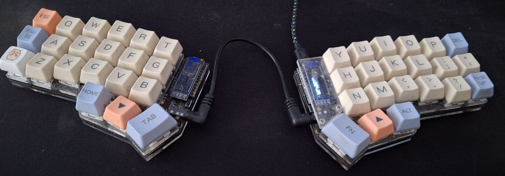
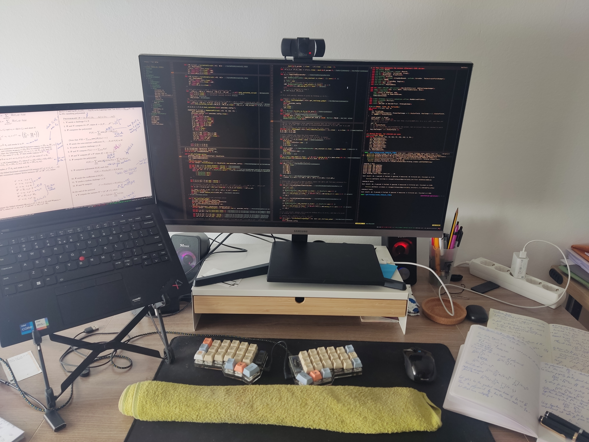
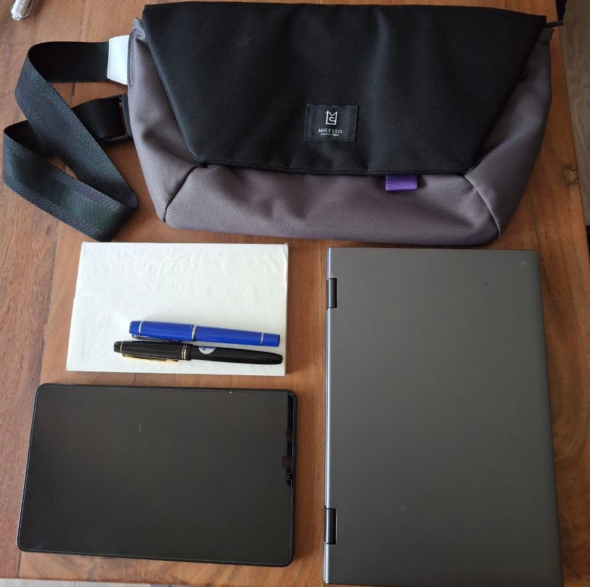
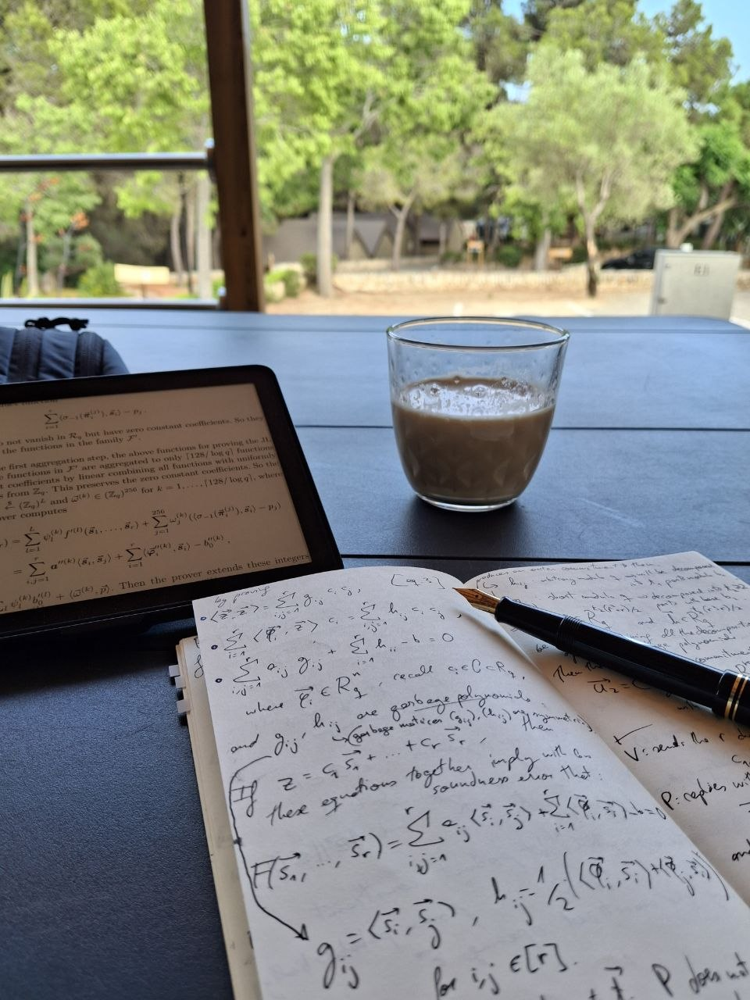
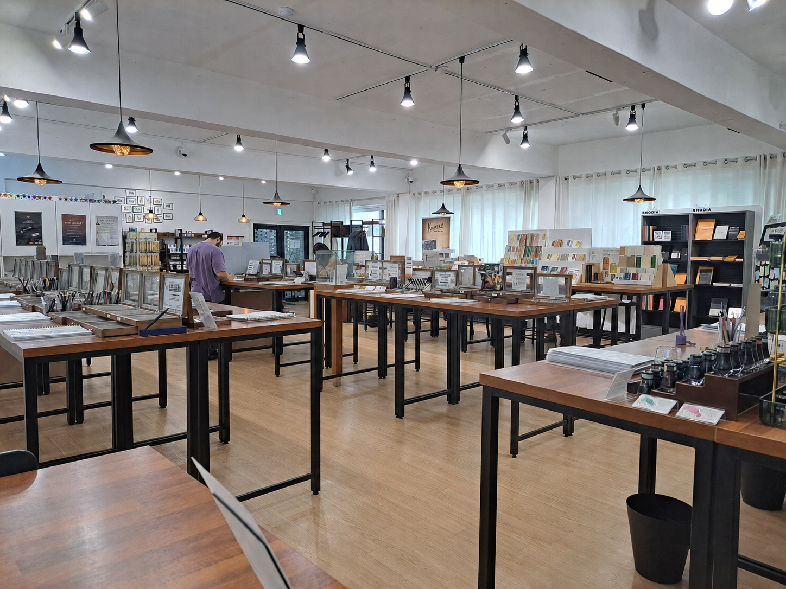

Tools
2026-06-08
A non-exhaustive overview of tools I use daily.
I had this post half-written for a couple of years, finally I’ve put the time to ‘complete’ it enough to publish it. See it as a kind of email to a friend sharing my ways of approaching everyday tools.
in general
- Always be willing to customize and optimmize the tools you use
- Usually closed source tools come with ‘defaults’ that may ‘suit the majority’ (or that it’s acceptable enough), but does not mean that you have to conform with it. This is another reason (from many) to use freesoftware or if not, opensource.
- when willing to use a tool, if it is closed source, always check free software / opensource alternatives, usually they exist and have an active community around them
- prefer terminal tools over GUI tools. In this way, working remotely inside a server feels the same as working locally in your laptop, just the terminal and the tool in there
- prefer offline tools than online tools
- In physical objects optimize for portability; also usually is good to not centralize many functions in a single object
computer
- in general
- maximize keyboard shortcuts, and minimize keyboard surface
- I use a 40% keyboard, corne keyboard
- the idea is that instead of moving your fingers to the keys, you want to move the keys under your fingers (eg. for numbers & symbols, F1 keys, etc)

the Corne keyboard I use, self-assembled and soldered
- minimize mouse usage:
- using the mouse means lifting the fingers from the keyboard
- mouse limits an entire hand to only click buttons, you have many more fingers to use
- so, naturally, vim & neovim as code and text editors
- also this has the benefit that working in my laptop or working in the server feels the same
- window manager: till last year I was using i3, now I’m using sway. The main idea is to be able to move quick across windows and panels, while avoiding touching the mouse.
- automate:
- this is, bash & python scripts are very useful; for almost every task that has more than 3 iterations of the same steps
- OS: of course, Linux. For the past 3 years I’ve been using NixOS, attracted by it’s imperative philosophy: you have a set of config files, format a laptop, load your config, and you have all your software with your configurations ready to use (ie. not manually {apt/pacman}-installing each software package)
- maximize keyboard shortcuts, and minimize keyboard surface
This is not only for code files; for example, when working on a \(LaTeX\) document, edit it in neovim with vimtex, so that at save it re-renders the pdf and reloads it in zathura. Additionally, this works great while being offline, compared to mainstream options such as overleaf. Similarly, when working on a markdown document, use md-live-server locally, splitting the screen between the terminal for editing and qutebrowser, so that no mouse is needed any time.

a bit old (~2023) desk setup, with my 'old' Thinkpad Carbon X1
devices
- At home:
- I build a ~850 euros server (year 2024), with AMD Ryzen 9 5900XT 3.3 GHz 16-Core, 64 GB of RAM.
- to work, I usually mosh (ssh) into it, then open a tmux and neovim, and work there, so that I can use any (lightweight) laptop while remotely running everything in the powerful-enough server. Another point for using vim/neovim as default code editor, is that when working remotely on a server, the setup remains the same. Another perspective is that you treat your laptop as a server for those kinds of tasks, so that when you work remotely on a server there is almost no difference.
- Outside home:
- for many years I used a Thinkpad x270 of 12.5” screen, then a Thinkpad Carbon X1 of 13”, but then few years ago I started using smaller laptops of 10”
- 10” laptop: I was using a 2nd hand Surface Go 2 that I bought for 200 euros, but recently I’ve replaced it with a Chuwi Minibook X which costs 300 euros (brand new). Both laptops have 10”.
- 8” tablet + notebook; or if in the sun, instead of the tablet, a eink reader (if so, a hacked one)

8" tablet and 10" laptop
A benefit of using lightweight laptops combined with a remote powerful server, is that the battery lasts longer than doing everything in the laptop, since you’re not doing many computations locally in the laptop!
services
Useful to have some raspberrypi/minipc at home with some services to make your life more comfortable (for example, with: docker compose configuration file).
For about 2 years I’ve been running multiple media services in a raspberry pi 5, recently replaced it with a Beelink S13 NUC, where I can support many users of non-technical friends.

Useful services:
- qbittorrent-nox: the server version of qbittorrent, managed through a web UI
- Jellyfin: stream all the downloaded content (shows, movies, music) to your devices (tv, tablet, phone, laptop, etc)
- slskd: server client for the Soulseek network, in order to download individual songs or albums that are not found through torrent
Highly recommended: with the previous services, you have all the minimal setup to enjoy media at home; but there is more dimension to it; the various projects within the *arr family, eg: sonarr, radarr, bazarr, prawlarr, etc.
Then you can tie all those services through a main page with homepage, so that all links are accessible with a single click.
Also, using browser adblockers has become a must over the years, additionally having a pi-hole connected to your router filters out adds in general on your home network (on all devices!), while also filtering out a big portion of trackers.
AFK / on the go
(AFK: away from keyboard, when I go outside of home)
- sometimes I bring a slim-foldable keyboard
- during the day (if I don’t require a laptop): slingbag with
- notebook and fountain pens
- eink reader (ie. hacked kindle) or a 8” tablet

can just randomly pop out of home and just sit anywhere to keep studying
- travel: 30L backpack with
With this backpack setup I’ve traveled across the world (6 continents), with stays ranging from few days to 2 months, all with same backpack setup.
Notes about the picture above: this picture is from >2 years ago, some changes I did since then:
- laptop: the Surface Go 2 has been replaced by the Chuwi Minibook X (both of 10”), see laptop section for more details
- tablet: the 10” tablet has been replaced by a 8” tablet
- emulator: the Retroid Pocket 4 Pro has been replaced by the Myioo Mini Plus (less powerful, so less console options, but smaller in the backpack; ideal for GBA games!)
pens and notebooks
In the recent years I’ve discovered the joy of using fountain pens. They are not essential, but is one of those little joys of life.
I’ve had the opportunity to try many different models, both from buying some of them and also from trying them in-store (in Seoul there is a very nice shop where for a small fee you have all the time you need to roam through the shop trying more than 200 pens!)

In purple t-shirt, enjoying 2h of trying many many pens at BestPen, Seoul (South Korea).
Beware, once you enter the fountain pens rabbit hole, the next worry is the paper, hence a natural following fixation are the notebooks to use with the fountain pens. Not all papers are good enough for fountain pens, but there are some very good paper quality notebooks. Similarly inks are another rabbit hole.